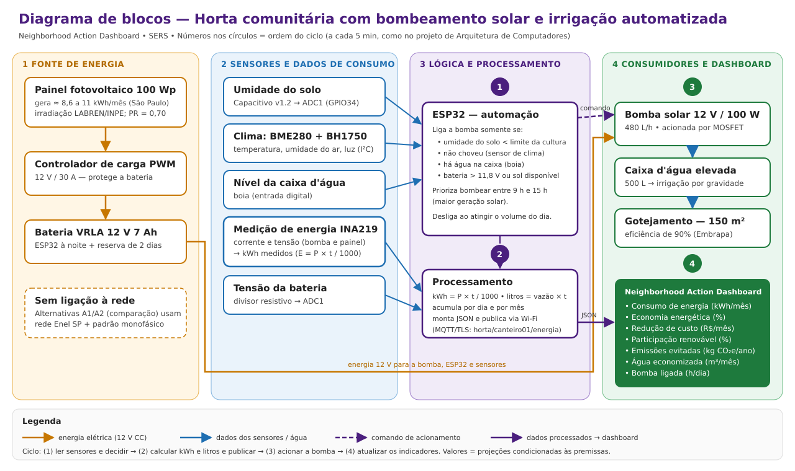

Indicadores de eficiência e sustentabilidade
Comparação com a alternativa convencional (A1: bomba de 370 W na rede, com timer fixo). Escolha a alternativa:
Energia, geração solar e água mês a mês
Necessidade de água estimada pela irradiação de São Paulo (LABREN/INPE) e pelos dias de chuva (INMET).
Consumo de energia (kWh/mês) e geração do painel de 100 Wp
Água aplicada na horta (m³/mês)
Comparação das alternativas
Mesma necessidade (irrigar 150 m² de canteiros) e mesmo período de referência (ano típico, valores por mês).
| Critério | A1 Convencional | A2 Rede + sensores | A3 Solar + sensores |
|---|---|---|---|
| Viabilidade técnica e condições | Simples, mas exige ponto de energia no terreno (padrão de entrada monofásico e vistoria da Enel). | Exige o mesmo ponto de energia, mais Wi-Fi ou rede móvel para o ESP32. | Não depende da rede. Exige local com sol entre 9 h e 15 h para o painel e caixa d'água elevada. |
| Impactos ambientais | Maior uso de água (irriga em dias de chuva) e emissões da rede. | Reduz água e energia, mas ainda usa a rede. | Zero emissão na operação. Bateria e painel exigem descarte correto no fim da vida útil. |
| Benefícios para a comunidade | Baixo custo de compra. | Economia de água e dados de consumo no dashboard. | Sem conta de luz, funciona em terrenos sem energia, dados no dashboard e uso educativo da energia solar. |
| Limitações | A conta mínima de 30 kWh/mês é cobrada mesmo com consumo de cerca de 6 kWh. | A economia de energia não reduz a conta, por causa do custo de disponibilidade. | Maior investimento inicial se a horta já tem energia. Bomba menor, que leva mais tempo para encher a caixa. Risco de furto do painel. |
Simulador de cenários
Altere as premissas para ver como os indicadores mudam. As fórmulas são as mesmas do script Python.
Monitoramento do canteiro (dados simulados)
Exemplo do que o ESP32 publica a cada 5 minutos via MQTT, no mesmo formato do projeto de Arquitetura de Computadores, acrescido dos dados de energia medidos pelo INA219. Um dia típico de fevereiro foi simulado.
Umidade do solo (%) e bomba ligada — dia simulado
Última mensagem recebida
Diagrama da solução
Fonte de energia → sensores e dados de consumo → lógica e processamento no ESP32 → consumidores e indicadores.

Premissas e fontes
Premissas usadas nos cálculos
Fontes de dados
- LABREN/CCST/INPE — Atlas Brasileiro de Energia Solar, 2ª ed.: irradiação no plano inclinado, ponto 5728 (lat. −23,50; lon. −46,65).
- INMET — Normais climatológicas 1991–2020, Mirante de Santana (São Paulo): dias de chuva ≥ 1 mm e temperatura média.
- Embrapa Hortaliças — evapotranspiração de referência e manejo de irrigação de hortaliças.
- ANEEL / Enel SP — tarifa B1 de 2025, reajuste de 2026 e fatura de fev/2026 (fator de tributos).
- ANEEL — REN 1.000/2021, art. 291 (custo de disponibilidade de 30 kWh para ligação monofásica).
- MCTI/SIRENE — fator médio de emissão de CO₂ do SIN (jan a abr/2025).
- Lojas online (nov/2026) — preços de referência de bomba, kit solar e componentes.
Links completos no arquivo docs/referencias_e_limitacoes.md do repositório.